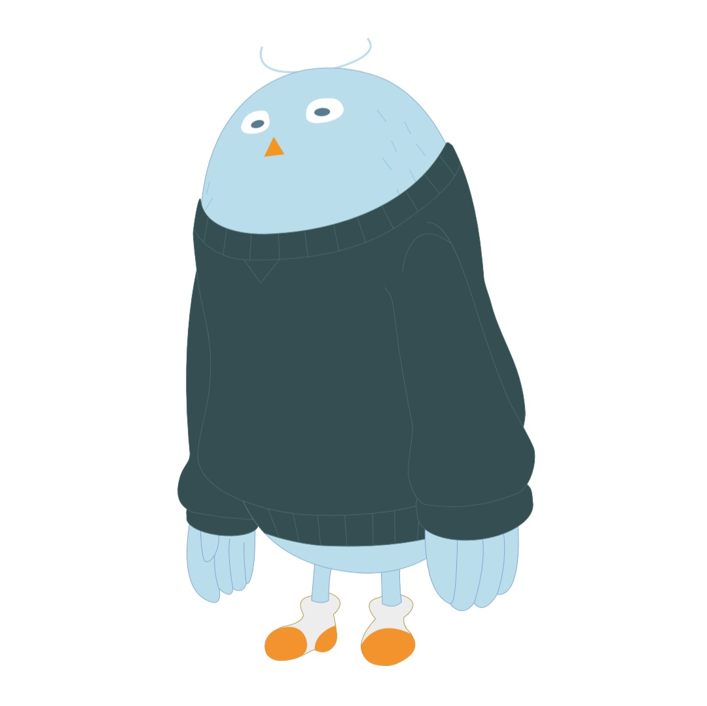

HAPPY BUDDY DAY !
00
:
00
pm
여행 성향 테스트 결과
감성 디자이너
감각적인 순간 기록자

즉흥적으로 움직이지만, 미리 준비된 태스크를 깔끔히 처리해놓고 여유롭게 여행을 즐기는 스타일입니다. 실내 공간을 선호하며, 카페, 갤러리, 서점 같은 장소에서 차분한 시간을 보내는 것을 좋아해요. 독특한 실내 풍경이나 소품을 사진으로 기록하며, 그 안에서 창의적인 감각을 발휘합니다. 섬세하고 감각적인 여행을 추구하는 이들은 눈앞의 순간을 사진으로 포착하는 데 큰 즐거움을 느낍니다.
Tips
카페, 서점, 갤러리처럼 특별한 실내 분위기를 즐기며 창의적인 사진을 찍어보세요.
사진 찍기 좋은 장소를 간단히 정리해두면 즉흥적인 일정 속에서도 멋진 사진을 남길 수 있어요.
Best Spots
프랑스 파리: 상징적인 명소에서 다양한 감각을 느끼기에 좋은 장소입니다.
그리스 산토리니: 찰랑이는 물결과 멋진 풍경을 담을 수 있는 이상적인 여행지입니다.
미국 뉴욕: 아이코닉한 도시의 풍경과 랜드마크를 중심으로 사진을 촬영할 수 있습니다.